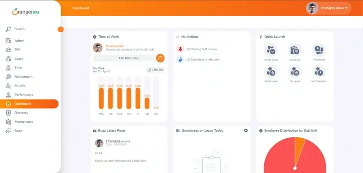
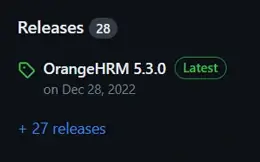
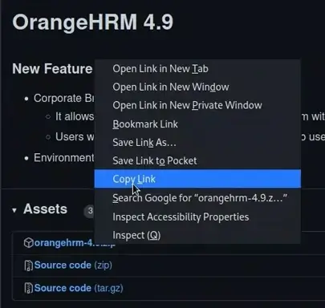
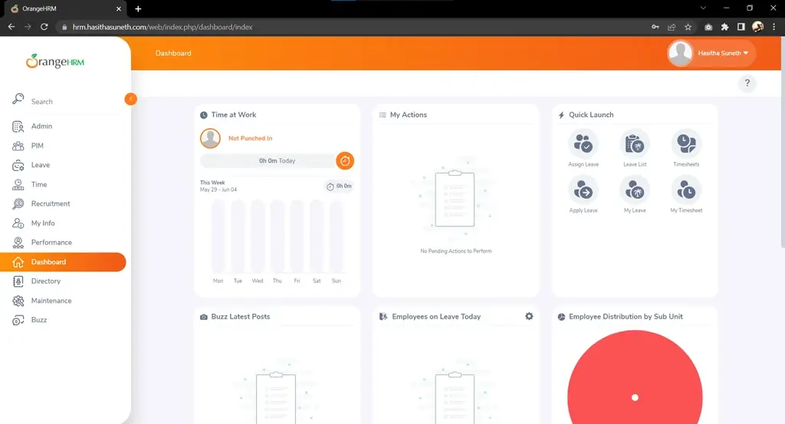
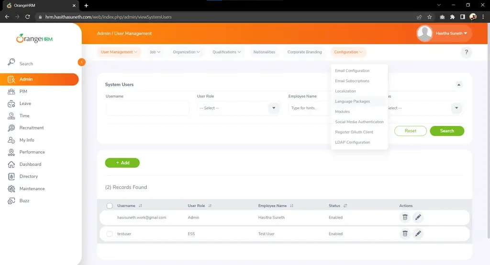
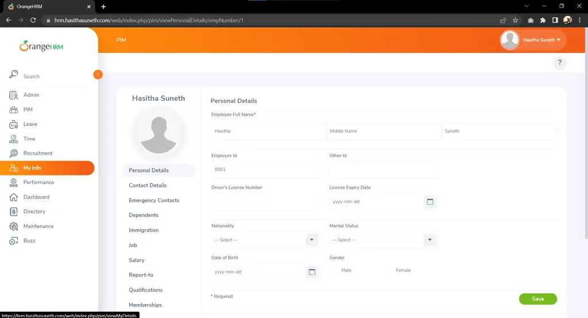

OrangeHRM Deployment & Upgrade on Linux
OrangeHRM is an open-source human resource management system.
Table of contents
What is OrangeHRM?
OrangeHRM is an open-source human resource management (HRM) software that provides a comprehensive set of tools and features to manage various HR functions such as employee information, recruitment, performance management, time and attendance tracking, leave management, and more. OrangeHRM offers both cloud-based and on-premises deployment options, and it is designed to be user-friendly and customizable to meet the specific needs of different organizations.
Website Documentation SourceForge GitHub Demo

In this tutorial, we are going to install OrangeHRM with a web server (Nginx and Apache) on Linux and use Kali as the Linux distribution system.
Steps to follow
- Install and Configure Prerequisites
- Install PHP and the required dependencies
- Install & configure MySQL Database
- Install & configure a web server (Apache or Nginx)
- Deploy OrangeHRM software
- Upgrade OrangeHRM software
Install and Configure Prerequisites
Step 01: Install PHP and the required dependencies
OrangeHRM version 4 required PHP 7.0 - 7.4 & OrangeHRM version 5 required PHP 7.4 or later.
sudo apt update && sudo apt upgrade sudo apt install php7.4 php7.4-mysql php7.4-curl php7.4-xml php7.4-zip
Step 02: Install & configure MySQL Database
OrangeHRM required MySQL 5.5 or later/ MariaDB 5.5 or later
Installation
sudo apt install mysql-server
Configuration
Change the database root user password, if needed;
sudo mysql ALTER USER 'root'@'localhost' IDENTIFIED BY 'new_password'; OR ALTER USER 'root'@'localhost' IDENTIFIED WITH mysql_native_password by '<new-password>';
You can create a database and user for the system in the web installation of the OrangeHRM. If you prefer that option, skip the following step of manually creating those.
Manually create a database and user for the OrangeHRM system;
sudo mysql -u root -pCREATE DATABASE <db-name>; CREATE USER '<db-user>'@'localhost' IDENTIFIED BY '<password>'; GRANT ALL PRIVILEGES ON <db-name>.* TO '<db-user>'@'localhost'; flush privileges; quit;
Add following lines to the
my.cnformy.inifile locate at/etc/mysql/.[mysqld] event_scheduler=ON
Restart MySQL service
sudo service mysql restart OR sudo systemctl restart mysql
Step 03: Install & configure a web server (Apache or Nginx)
Install and configure one of the web servers as you prefer. Don’t install both servers at the same time.😊
Installation
Nginx
sudo apt install nginx
Apache
sudo apt install apache2
Configuration
Nginx
Edit the
rootof the default nginx configuration file located at/etc/nginx/sites-available/default.sudo nano /etc/nginx/sites-available/defaultsudo systemctl restart nginx
Apache
Edit the
DocumentRootof the default apache configuration file located at/etc/apache2/sites-available/000-default.conf.sudo nano /etc/apache2/sites-available/000-default.confsudo service apache2 restart OR sudo systemctl reload apache2
Deploy OrangeHRM Software
Download the latest or preferred version of the OrangeHRM system.
Go to the OrangeHRM GitHub repository and select releases from the right side panel. Then select your preferred version and right-click and copy the link on the orangehrm-<version>.zip file located in the Assets section.
Install Zip & Unzip on Linux (Debian)
sudo apt install zip unzip
| Select Release | Copy the link |
|---|---|
|  |  |
Then go to the web server directory and download the setup (replace the <url> with the copied link). After the download is complete, unzip the file to the web directory (replace <file-name> with the actual file name of the downloaded file).
cd /var/www/html sudo wget <url> sudo unzip <file-name>
Web Server Configurations
After unzipping the file, reconfigure the web server’s root location configurations to point to the unzipped directory.
Web Installation Process
Finally, Go to the domain/IP address mapped to the system using a web browser and start the web installation process. Please refer to the following video guide:
For further details, kindly consult the OrangeHRM Official Installation Guide.
Upgrade OrangeHRM Software
Backup the MySQL Database
Replace <db-user>, <db-name>, and <path> with your OrangeHRM database user, database name, and the path you want to save the backup file.
mysqldump -u <db-user> -p <dn-name> > <path>/sqldump.sqlIf got an error use below;
mysqldump --column-statistics=0 -u <db-user> -p <db-name> > <path>/sqldump.sql
Download the latest or preferred version of the OrangeHRM system.
Go to the OrangeHRM GitHub repository and select releases from the right side panel. Then select your preferred version and right-click and copy the link on the orangehrm-<version>.zip file located in the Assets section.
Then go to the web server directory and download the setup (replace the <url> with the copied link). After the download is complete, unzip the file to the web directory (replace <file-name> with the actual file name of the downloaded file).
cd /var/www/html sudo wget <url> sudo unzip <file-name>
Web Server Configurations
There are two ways to do this.
The first way is to rename the old OrangeHRM directory to a different name and rename the newly created OrangeHRM directory to the previous name. And the second way is to reconfigure the web server (Nginx or Apache) to map to the newly created web directory.
Web Upgrade Process
Finally, Go to the domain/IP address mapped to the system using a web browser and start the web upgrade process. Please refer to the following video guide:
For further details, kindly consult the OrangeHRM Official Upgrade Guide.
Screenshots


